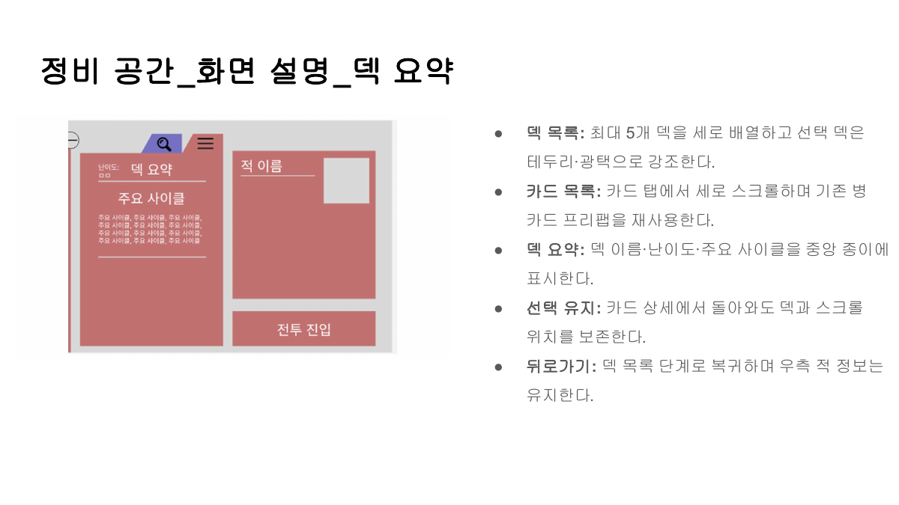
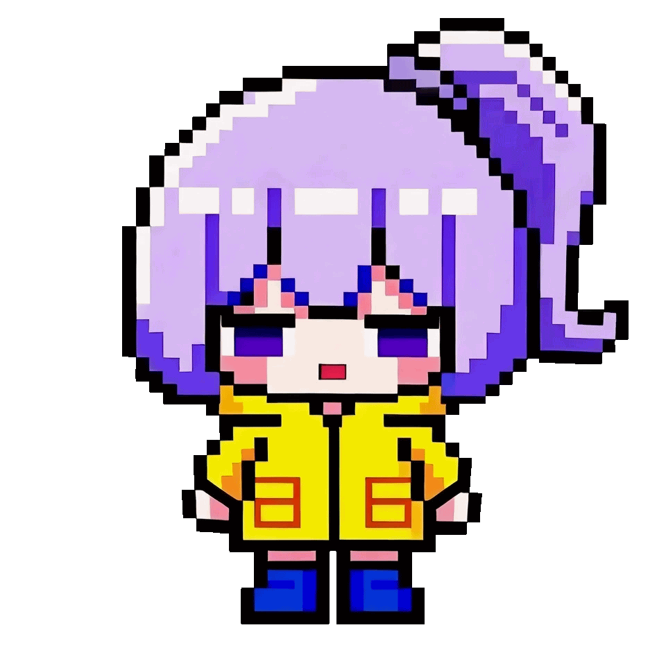
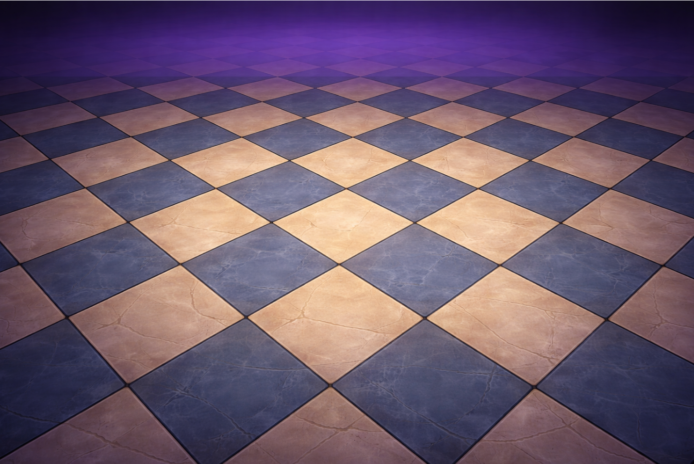
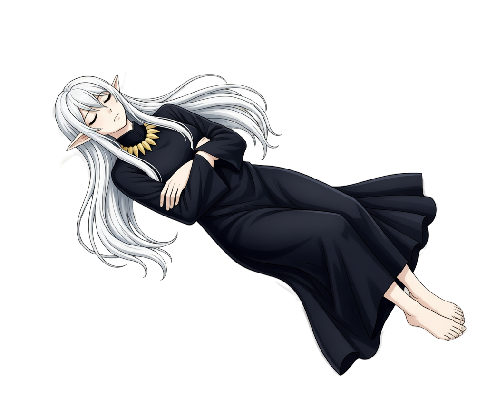
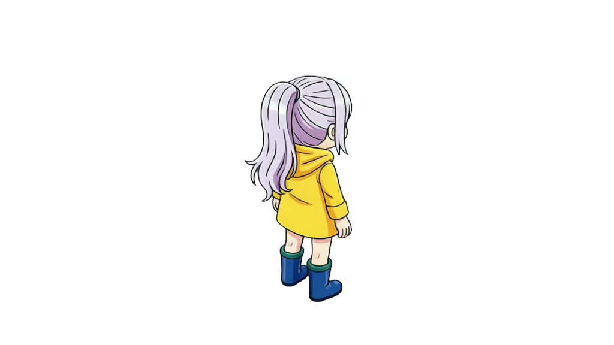

도구와 작업 결과
도구와 역량
기획을 전달하고, 구현 결과를 확인하는 데 도구를 사용합니다.
프로젝트에서 실제로 사용한 도구와 작업 결과를 모았습니다. 규칙을 문서로 정리하고 조작을 프로토타입으로 보여주며, 엔진과 로그에서 결과를 확인합니다. 이미지와 음악 제작 과정도 함께 담았습니다.
아이디어를 규칙과 데이터로 정리합니다.
- Google Docs
- Google Sheets
기획서에는 기능의 목적과 정상 흐름뿐 아니라 입력 조건과 예외도 함께 적습니다. Google Docs와 Sheets로 문서와 데이터 테이블을 정리하며, 협업자가 참조할 기준을 남겼습니다.
Exit Value에서는 시나리오 테이블을 정규화하고 데이터 관계도를 작성했습니다. 나린가락에서는 장면과 화자, 대사, 리소스 참조를 CSV로 정리해 이야기를 게임 데이터로 전달했습니다.

조작 의도를 보여주고 엔진에서 확인합니다.
- Figma
- Unity
- HTML 프로토타입
Project UT에서는 Figma로 화면 상태와 조작 흐름을 보여주는 프로토타입을 만들었습니다. 시안을 Unity uGUI에 배치하고 앵커를 조절했으며, Unity MCP로 에디터 상태를 확인하고 수정했습니다.
냥냥스타에서는 글로 전달하기 어려운 코멘트 블록의 조작을 HTML 프로토타입으로 보여줬습니다. 화면의 형태와 함께 드래그 취소, 중복 제한, 자동 스크롤처럼 동작이 달라지는 조건을 확인했습니다.

구현 결과를 기록하고 다음 확인 항목을 정합니다.
- Google Sheets
- GitHub Issues
Rune Trace에서는 입력 유형과 플로어, 재시도에 따라 플레이 로그를 나눠 봤습니다. 무효 입력이 반복된 구간을 바탕으로 튜토리얼 적용 전후에 비교할 항목을 정리했습니다. 표본이 적으므로 원인을 확정하거나 시장 성과로 해석하지 않았습니다.
냥냥스타에서는 테스트 케이스와 재현 절차를 정리하고 구현 결과를 검수했습니다. Google Sheets의 QA 표와 GitHub Issue로 오류 상태와 수정 이력을 추적하며, 의도와 다른 동작을 협업자가 확인할 수 있게 기록했습니다.

베이스에서 동작으로,
분리한 리소스에서 장면으로.
- Aseprite
- DaVinci Resolve
- CapCut
캐릭터의 기본 형태를 정한 뒤 같은 캐릭터의 공격 동작을 스프라이트 시트로 만들었습니다. Aseprite에서 보정하고 GIF로 재생하며 프레임이 이어지는 모습을 확인했습니다.
영상은 원활한 제작과 수정을 위해 배경과 캐릭터 등 각 리소스를 분리하고, 별도로 배치하고 조작했습니다. 한 요소를 수정할 때 장면 전체를 다시 만들지 않도록 구성했습니다.
하나의 베이스가 움직이는 캐릭터가 되기까지
베이스 원본 ↗
시트 원본 ↗

GIF 원본 ↗
영상 편집 / 리소스별 조작
배경과 캐릭터를 무대 세트처럼 나눠 다뤘습니다.
배경을 유지한 채 캐릭터의 위치와 크기, 등장 순서를 각각 조절할 수 있도록 리소스를 분리했습니다. 아래 조절 막대를 움직이면 하나의 장면을 이루는 이미지가 서로 다른 깊이의 레이어로 벌어집니다.

01 · 배경
02 · 울드
03 · 비비스테이지와 엔딩에 사용할 음악을 제작합니다.
- Suno
나린가락에서는 Suno로 스테이지 BGM 초안을 제작하고 조정했습니다. 곡의 템포와 스테이지 난이도를 서사의 긴박도와 연결하며 사운드를 구성했습니다.
Exit Value에서는 엔딩 곡과 음악 영상을 제작했습니다. 두 프로젝트의 상세 페이지 맨 위에서 직접 제작한 음원을 재생할 수 있습니다.